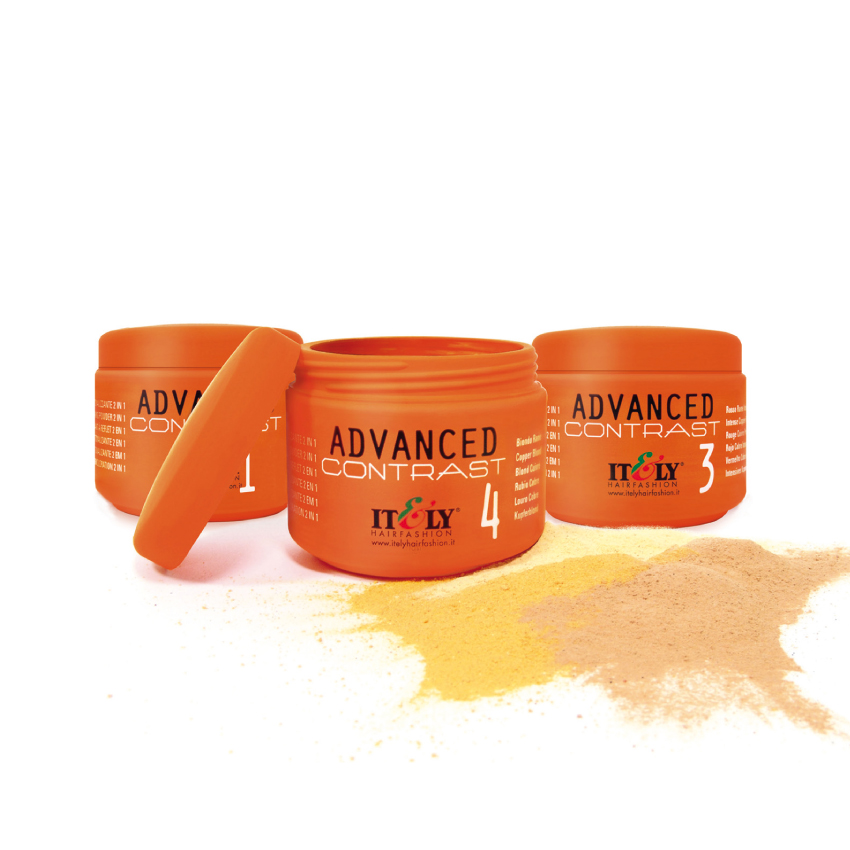

 |
ADVANCED CONTRASTÉ o sistema de descoloração de contraste 2 em 1 realizado em tonalidades vermelhas e louras para cabelos naturais e pintados. Ideal para luminosas madeixas de fácil e rápida realização. Com uma única aplicação é possível obter uma descoloração eficaz e de uma só vez uma coloração com intensos reflexos de larga duração. Boião 200 gr. (relação 1:2) Nº 1 vermelho fogo Boião 200 gr. (relação 1:2)
|